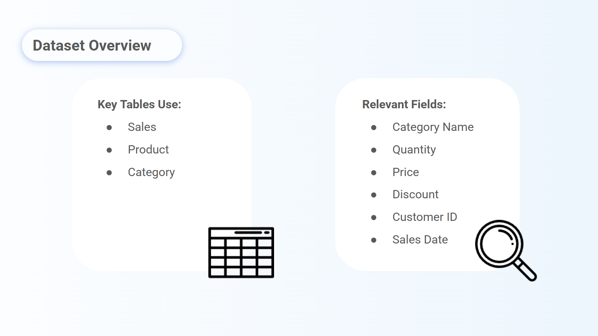
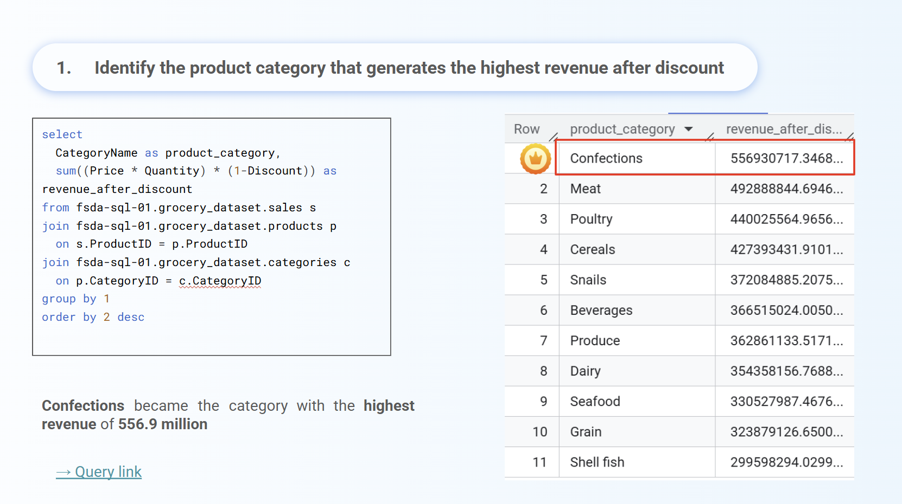
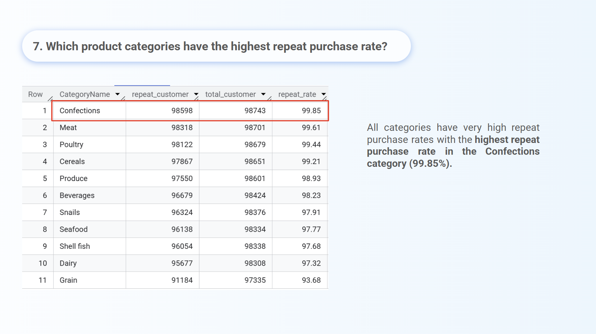
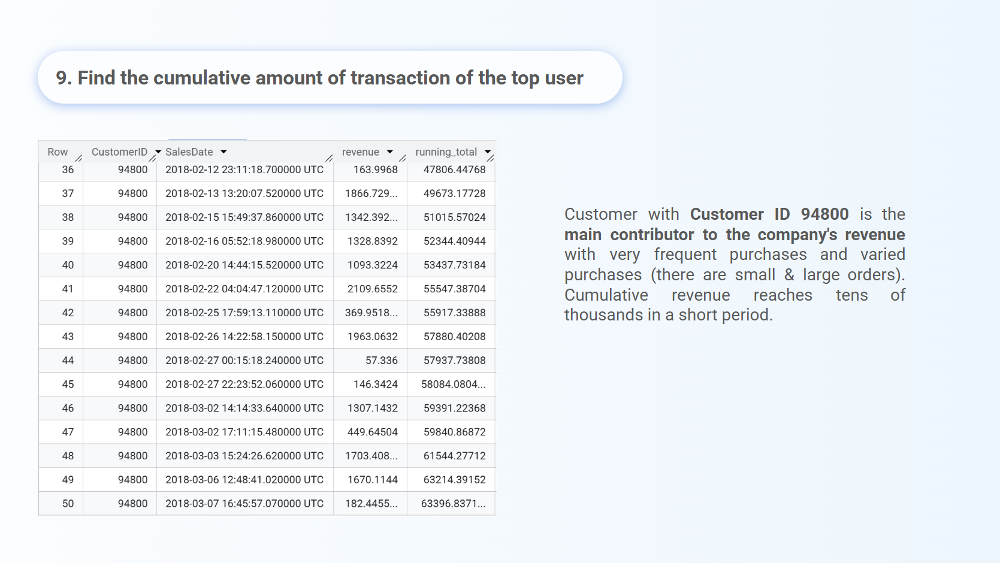

RevoGrocers is a fictional grocery retail business operating in multiple locations with a diverse product range. The project analyzes sales performance using a Kaggle dataset to enhance data-driven decision-making. It specifically investigates how different product categories and customer behaviors influence overall company revenue.